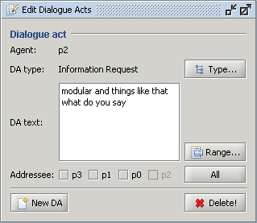

The Dialogue Act Editor (Figure 1) displays the currently selected dialogue act element in the Transcription Area or the new dialogue act that is being created.

Figure 1: Dialogue Act Editor
The Agent label displays information about the speaker who is performing the dialogue act. The DA type label contains the type of the current dialogue act element. Next to the DA label is the Type button. It is used for changing the type of the current dialogue act. The DA text field displays the content of the dialogue act. The content can be changed by pressing the Range button and selecting the new range of the dialogue act element in the Transcription Area. The Addressee list of checkboxes displays the addressee of the dialogue act. The positions of the Addressee checkboxes in the Dialogue Act Editor correspond to the positions of the participants in the played video file. The All/None button selects/deselects all checkboxes in the list. Located at the bottom of the Dialogue Act Editor are the New DA button and the Delete button.
Pressing the New DA button a new dialogue act element is created for the previously selected text in the Transcription Area. Pressing the Delete button, the current dialogue act element is deleted from the corpus.